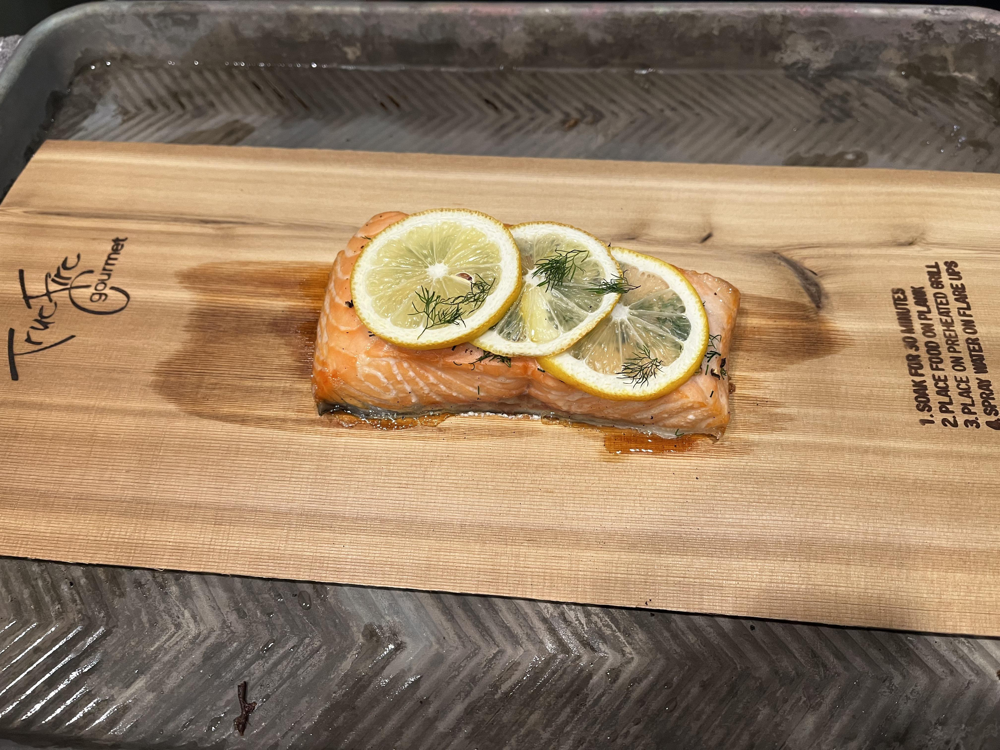

Salmon

Description
Simple piece of salmon air fried with a shingle of lemons slices and herbs. Quick and versatile, serve it with any side you want. This recipe will be served with a simple plain jasmine rice.
Ingredients (serves 2 people)
- 2 - Medium size salmon filets
- 1 - Lemon
- 1 cup - Jasmine Rice
- Parsley
- Olive oil
- Salt
Preparation
- Take out salmon and pat dry with a paper towel
- Put a light coat of olive oil on the flesh side
- chop and put your herbs on the fish. keep some aside for garnish
- Thinly slice your lemon and shingle on the salmon to cover completely
Instructions
- Cook rice as per instructions. The fish will take less time than the rice
- Oil the basket of your air fryer or put baking paper
- Place Salmon in air fryer and air fry at 350F for 10 minutes
- Check on the Salmon, the flesh should be pinkish turning white
- If it is still red/orange, continue cooking
- Plate, add the rest of your herbs on top of the lemons and rice. Enjoy
HOME